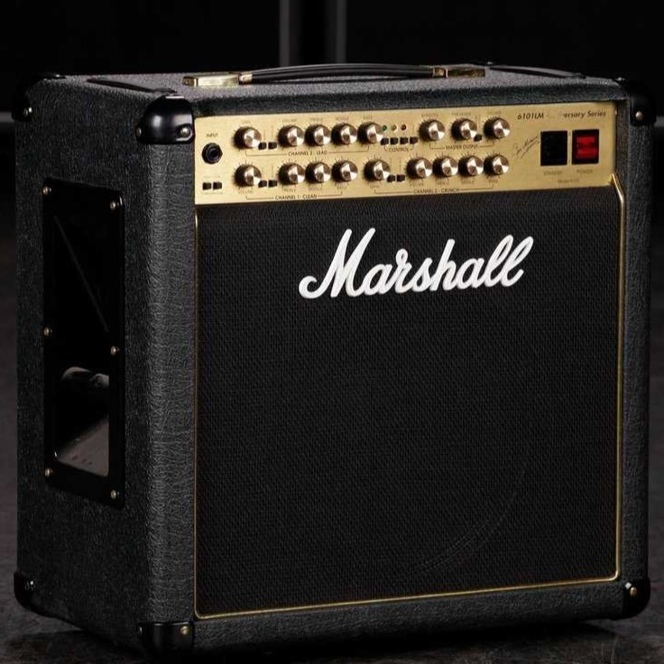

Акустические гитары
Струнный щипковый музыкальный инструмент из семейства гитар, звучание которого осуществляется благодаря колебанию струн, усиливаемому за счёт резонирования полого корпуса. Современные акустические гитары могут иметь встроенные звукосниматели: магнитные или пьезоэлектрические, с эквалайзером и регулятором громкости.
Перейти к выборуЭлектрогитары
Электрогита́ра — струнный щипковый электрический музыкальный инструмент, разновидность гитары, имеющая электромагнитные звукосниматели, преобразующие колебания металлических струн в колебания электрического тока. А также данная разновидность гитар имеет разные формы корпуса. Сигнал со звукоснимателей может быть обработан для получения различных звуковых эффектов и усилен — для воспроизведения через акустическую систему. Слово «электрогитара» возникло от словосочетания «электрическая гитара».
Перейти к выборуАкустические бас-гитары
Это басовый инструмент, разновидность бас-гитары с полым деревянным корпусом, похожий на акустическую гитару со стальными струнами, хотя обычно больше неё. Как и традиционная электрическая бас-гитара и контрабас, акустическая бас-гитара имеет четыре струны, которые обычно настроены на EADG, на октаву ниже четырёх нижних струн шестиструнной гитары, которая имеет такую же высоту настройки, как и электрический бас.
Перейти к выборуБас-гитары
Струнно-щипковый электрический музыкальный инструмент, предназначенный для игры в басовом диапазоне. На нём играют преимущественно пальцами, но допустима и игра медиатором. В сочетании с ударной установкой создаёт ритм-секцию композиции. Помимо электрической бас-гитары существует также акустический вариант бас-гитары, встречающийся в музыке гораздо реже, но он относится к другому классу инструментов (не является электрофоном), и их не следует путать.
Перейти к выборуУдарные установки
Набор ударных инструментов (барабанов, тарелок и других), использующихся совместно одним барабанщиком. Применяется в рок-группах, джазовых и эстрадных ансамблях и оркестрах, иногда в симфонических, духовых и камерных оркестрах.
Перейти к выборуКомбоусилители для гитар
Комбоусилитель (сокращённо «комбик») — это незаменимое устройство для музыкантов, играющих на басу, акустических или электро-гитарах. Оно усиливает звук с помощью объединённых в одном корпусе предусилителя, усилителя и акустической системы. Существуют также усилители в отдельных корпусах, которые соединяются с так называемым «кабинетами» — акустическими системами, но такая громоздкая конструкция актуальна далеко не во всех случаях.
Перейти к выбору